The Winterfest 2025 is the most-awaited winter special event in Hero Wars: Dominion Era, bringing 11 days of festive celebrations filled with exclusive rewards and special gifts.
This is one of the most generous events of the year, offering opportunities to obtain the highly sought-after Lesser Elemental Spirit Summoning Sphere, an essential item for F2P players.
In this complete guide, you'll discover how to maximize your earnings in the event, understand the reward rankings, and learn the best strategies to obtain the most valuable gifts.
From the Letter to Winter Claus to the Gift Shop offers, we'll cover everything you need to know to make this Winterfest your best winter experience in Dominion Era.
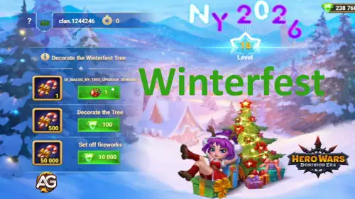
Winterfest 2025 - A festive event full of special rewards.
📅 Event Dates
Winterfest 2025 will last for 11 days, starting on December 21, 2025 and ending on January 1, 2026.
This extended period ensures that all players have sufficient time to participate, complete tasks, and accumulate the necessary resources to obtain the best event gifts.
⏰ Start: December 21, 2025 ⏰ End: January 1, 2026 📊 Duration: 11 days
💌 Letter to Winter Claus - How to Choose Your Gifts
The event begins with the legendary "Letter to Winter Claus", where you write:
"Dear Winter Claus! I have been a good guard this year. Please give me one of these gifts."
At this initial phase of the event, you have the opportunity to choose 3 special items from a curated list of exclusive rewards.
The game guarantees that you will receive 1 of these 3 chosen rewards at the end of Winterfest.
This is one of the most important decisions of the event, as it will determine one of your main gains — choose based on your player type and current needs.
🎁 Available Gifts to Choose From:
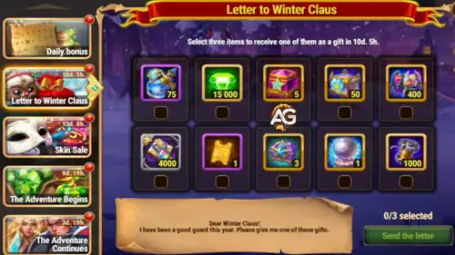
Letter to Winter Claus Gifts.
75 Energy Bottles - For daily refresh for players who need more attempts
15,000 Emeralds - For purchases in the shop and accelerators
1x Lesser Elemental Spirit Summoning Sphere ⭐⭐⭐ BEST FOR F2P - The rarest and most valuable item in the game
3 Boxes of Rare Hero Soul Stones (Augustus, Cascade, Electra, Guss, Lyria, and Folio)
400 Boxes of Super Titans - To build stronger Titan teams
Other Various Gifts
⭐ RECOMMENDATION: If you're an F2P or casual player, the Lesser Elemental Spirit Summoning Sphere is definitely the best choice. This item is extremely rare and difficult to obtain, making it invaluable for your long-term progress.
🏆 Winterfest Ranking System
The Winterfest event features 3 different rankings that function simultaneously. Your position in each ranking determines the rewards you receive.
The better your ranking, the better the prizes!
1️⃣ Generosity Ranking
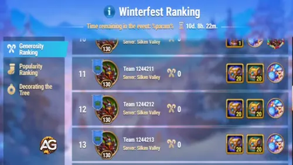
Generosity Ranking - The more generous, the better your position.
The Generosity Ranking shows how many Generosity Points you have accumulated. You earn Generosity Points by sending gifts to other players.
The amount of points you gain depends on the value of the gift sent — the more valuable the gift, the more points you accumulate.
How to Participate:
Access the event gift section (Winterfest Presents)
Purchase gifts using New Year Candy or Ginger Bread Cookies
Send gifts to members of your guild
The more valuable the gift, the more points you earn
Your ranking position improves with each gift sent
Rewards:
Hero Resource Chest - Based on your final position
Titan Resource Chest - Based on your final position
Grand Prize (Top Positions):1x Lesser Elemental Spirit Summoning Sphere ⭐
💡 Tip: The amount of points you gain depends directly on the value of the gift sent. More expensive gifts generate more points and improve your ranking faster!
2️⃣ Decorating the Tree Ranking
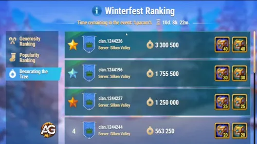
Decoration Ranking - Decorate the tree and earn valuable resources.
The Winterfest Tree Decoration Ranking shows how many Winterfest Baubles your guild has used in total.
Only guild members can decorate the tree and earn ranking points by contributing resources.
How to Participate:
Access the Christmas tree in the guild event section
To decorate the tree, you need Winterfest Bauble or Emeralds
Each decoration contributes to your guild's total ranking
Your personal position is determined by the total value you invested
Rewards:
Hero Resource Chest - Based on your final personal position
Titan Resource Chest - Based on your final personal position
The higher your position, the better your personal rewards
⭐ Important Update: Each guild member now receives personal ranking rewards for decorating the Winterfest Tree, based on your guild's final ranking.
This means you can earn individual rewards in addition to guild rewards, making participation even more valuable!
💡 Tip: Coordinate with your guild to maximize collective decoration and earn extra personal rewards. This is a great way to invest your Emeralds productively during the event.
3️⃣ Popularity Ranking
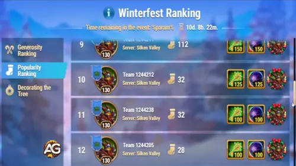
Popularity Ranking - Be popular and earn special artifacts.
The Popularity Ranking shows how many Popularity Points you have received from other players.
You earn Popularity Points when you receive gifts from other players. The amount of points you gain depends on the value of the gift received.
How to Earn Popularity Points:
Receive gifts from other guild members
The more valuable the gift received, the more points you accumulate
Each gift received improves your ranking position
Be popular by sharing information and helping your guild
Rewards:
Artifact Key - Essential for artifact unlock
Summoning Spheres - To summon special heroes
The higher your position, the more rewards you earn
💡 Tip: Be an active and friendly guild member! The more you interact and receive gifts, the higher your popularity will be and the better your rewards. Remember: being generous (sending gifts) makes you receive gifts in return, improving your popularity!
🎄 Climbing the Christmas Tree - New Year Candy
The Christmas tree functions as a leveling system during the event. As you climb the tree, you earn New Year Candy, the special currency of the Winterfest Gift Shop.
Conversion Rates - New Year Candy:
1 Winterfest Bauble = 1 New Year Candy
100 Emeralds = 500 New Year Candy
10,000 Emeralds = 50,000 New Year Candy
💡 Value Analysis: The best rate is to use Emeralds in large quantities (10,000 Emeralds = 50,000 New Year Candy).
If you don't have enough Emeralds, use 100 Emeralds at a time to get 500 New Year Candy.
📊 Quick Calculator:
For 20,000 New Year Candy: 200 Winterfest Bauble OR 2,000 Emeralds
For 50,000 New Year Candy: 500 Winterfest Bauble OR 5,000 Emeralds OR 1x 10,000 Emeralds
For 100,000 New Year Candy: 1,000 Winterfest Bauble OR 10,000 Emeralds OR 2x 10,000 Emeralds
📸 Winterfest Presents Screen
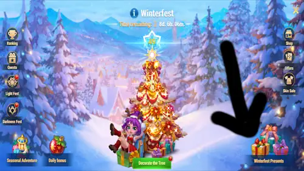
Winterfest Presents Screen - Where you purchase and send exclusive gifts to your guild members.
The Winterfest Presents Screen is your main hub for purchasing gifts using New Year Candy and Ginger Bread Cookies.
Here you can browse all available gifts, check their costs, and send them directly to your guild members. The more gifts you send, the higher your Generosity ranking climbs!
🎁 Winterfest Gift Storage Screen
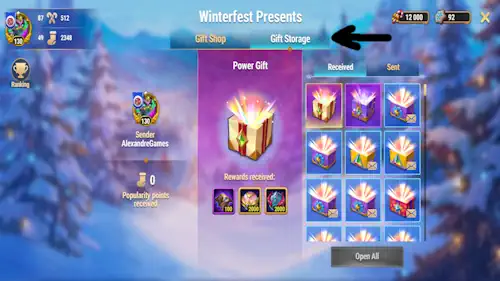
Winterfest Gift Storage Screen - Manage all your sent and received gifts efficiently.
The Gift Storage Screen allows you to track and manage all your gifts in one place. Here you can:
View sent gifts - See which gifts you've sent to guild members
View received gifts - Check the gifts you've received from other players
Monitor your progress - Track your Generosity and Popularity points
Claim rewards - Collect any pending gifts from guild members
This screen is essential for keeping track of your event participation and ensuring you don't miss any received gifts or opportunities to climb the rankings!
🎁 Winterfest Gift Shop - Exclusive Gifts
The Winterfest Gift Shop is where you spend your New Year Candy and Ginger Bread Cookies to buy special and exclusive gifts to send to your guild friends.
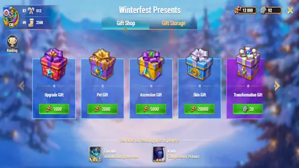
Winterfest Gift Shop Screen - Manage all your sent and received gifts efficiently.
Choosing your gifts wisely is crucial to maximize the event's value. By sending and receiving gifts, you also earn additional rewards and climb the Popularity and Generosity rankings. On the Winterfest Presents screen you will see all available gifts for purchase, and on the Gift Storage screen you can manage your sent and received gifts.
💰 Upgrade Gift
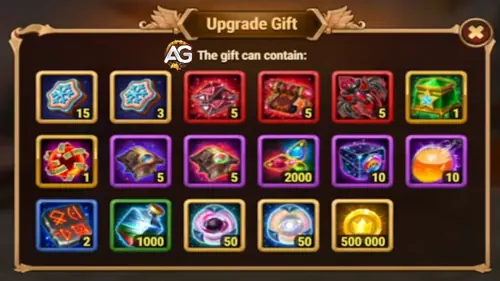
Upgrade Gift - Upgrade your heroes with this exclusive gift.
Cost: 1,000 New Year Candy
This gift contains resources to upgrade your heroes. It's a solid investment for overall progression.
🚀 Ascension Gift
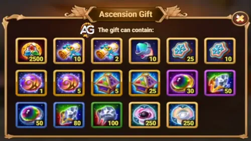
Ascension Gift - Accelerate your heroes' ascension.
Cost: 5,000 New Year Candy
This gift is dedicated to ascension materials. If you're working on ascending heroes, this is an excellent investment.
🐾 Pet Gift
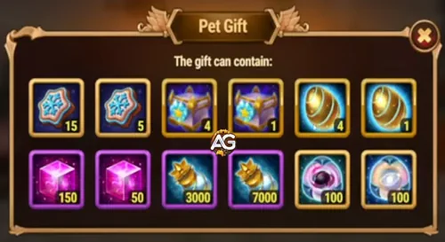
Pet Gift - Resources to develop your Pets.
Cost: 2,000 New Year Candy
Perfect for players developing their Pets. This gift contains valuable resources for Pet enhancement.
❄️ Skin Gift (Exclusive Winter Skin)
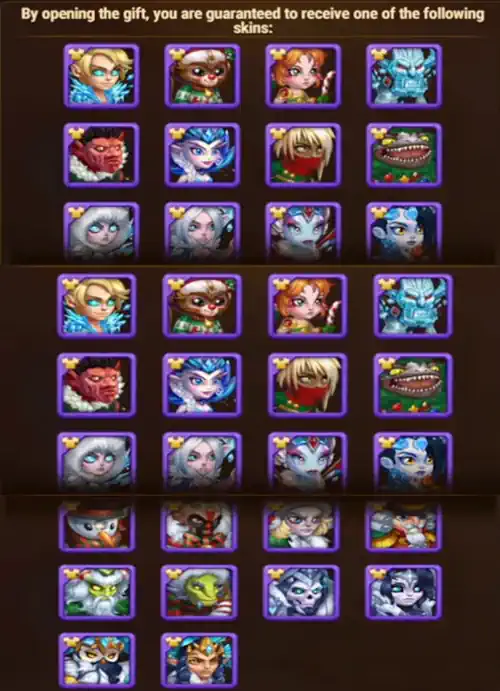
Skin Gift - Exclusive winter skins available only during this event.
Cost: 20,000 New Year Candy
⚠️ IMPORTANT NOTE: These exclusive winter skins CAN ONLY BE OBTAINED DURING WINTERFEST.
They will not be available after the event ends. Future winter skins will only be offered through real money (cash) offers.
If you want to have an exclusive Winterfest skin, PRIORITIZE THIS PURCHASE.
✨ Transformation Gift
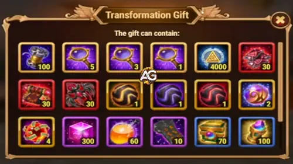
Transformation Gift - First level of transformation.
Cost: 20 Ginger Bread Cookies
This is the first transformation gift. It contains resources for hero transformation. A good intermediate investment.
⭐ Premium Power Gift (THE BEST GIFT!)
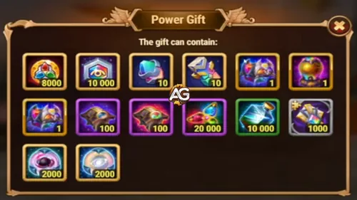
Premium Power Gift Gift - Your maximum goal in the event with a chance of Lesser Elemental Spirit Summoning Sphere!
Cost: 40 Ginger Bread Cookies
🎯 THIS IS YOUR MAXIMUM GOAL IN THE EVENT!
This premium gift has the possibility of containing:
1x Lesser Elemental Spirit Summoning Sphere (The rarest item!)
Seal of Nature and other valuable resources
💡 Recommended Strategy: You receive 6 Ginger Bread Cookies daily (daily login = 6 cookies x 11 days = 66 cookies).
With 66 Ginger Bread Cookies, you can:
Buy 1x Premium Transformation Gift (40 cookies)
Buy 1x Transformation Gift (20 cookies)
Have 6 extra cookies left
If you manage to get more Ginger Bread Cookies through other activities, consider buying multiple Premium Transformation Gifts to increase your chances of obtaining the Lesser Elemental Spirit Summoning Sphere!
🎯 General Strategy and Important Tips
📱 Daily Login - Don't Miss Out!
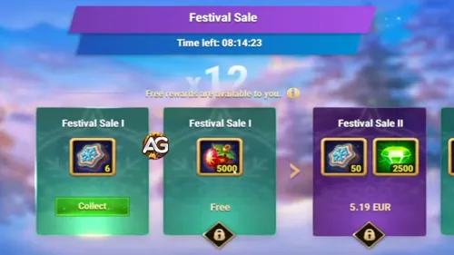
Daily Rewards - Log in every day to earn special prizes.
Log in daily to receive:
6 Ginger Bread Cookies per day
5,000 Winterfest Bauble per day
Total Calculation (11 days):
66 Ginger Bread Cookies (enough for 1 Premium Gift + 1 Regular Gift)
55,000 Winterfest Bauble
Don't miss any day! These cookies are your main currency for buying special transformation gifts.
⚠️ Important Rule: Don't Leave Your Guild!
During the event, you CANNOT leave your guild. If you leave, you will be disqualified from the rankings and lose all associated rewards.
Choose your guild carefully before the event begins!
🎁 Gifts to Guildmates - Random Bonus
When you send gifts to guild members to climb the Generosity Ranking, there's a random bonus:
You also earn random Hero Soul Stones
The hero changes every 24 hours
This is an extra way to earn valuable resources
💎 Gift Priority - Final Recommendation
ORDER OF PRIORITY:
#1 - Exclusive Winter Skin Gift (20,000 Candy) - Exclusive skins that will never appear again
#2 - Premium Transformation Gifts (40 Cookies each) - Chance to obtain Lesser Elemental Spirit
#3 - Other gifts - Based on your current needs (Upgrade, Ascension, Pet)
🌟 Summary of Winning Strategy
If you want to maximize your earnings in Winterfest 2025:
Choose the Lesser Elemental Spirit Summoning Sphere in Santa's Letter (initial choice)
Actively participate in all 3 rankings - Generosity, Decoration, Popularity
Log in daily to collect your 6 Ginger Bread Cookies
Buy the Exclusive Winter Skin (20,000 New Year Candy) - it's your best priority
Buy Premium Transformation Gifts with your Ginger Bread Cookies - seek that rare Lesser Elemental Spirit!
Use any remaining New Year Candy on Upgrade Gifts or Ascension Gifts as needed
Don't leave your guild during the event
Send gifts to your guildmates regularly to earn extra Hero Soul Stones
❓ Frequently Asked Questions (FAQ)
Q: What's the best gift choice in Santa's Letter?
A: The Lesser Elemental Spirit Summoning Sphere is definitely the best choice for most players, especially F2P. This item is extremely rare and difficult to obtain, making it invaluable.
Q: How much New Year Candy can I earn in total?
A: It depends on your investments. With 55,000 Winterfest Bauble (daily login), you can generate 55,000 New Year Candy. If you invest Emeralds, you can earn much more.
Q: Do I need to spend real money to enjoy the event?
A: No! The event is completely F2P-friendly. With daily login and ranking participation, you can obtain many excellent rewards without spending a cent.
Q: Can I change guilds during the event?
A: No. If you leave your guild during the event, you will be disqualified from all rankings. Choose your guild in advance.
Q: What's the chance of obtaining the Lesser Elemental Spirit in the Premium Transformation Gift?
A: The exact odds are not revealed by the game, but it's a rare item. Buy multiple gifts to increase your chances.
Q: Will Winterfest skins return in future events?
A: No. According to the game description, these exclusive winter skins CAN ONLY BE OBTAINED DURING THIS EVENT. Not buying now means you'll have missed the opportunity forever.
🎉 Conclusion
Winterfest 2025 is one of the most generous events in Hero Wars: Dominion Era, offering incredible opportunities to earn rare and exclusive items.
With proper planning and consistent participation, you can maximize your rewards and obtain some of the most valuable items in the game.
Remember:
✅ Choose the Lesser Elemental Spirit in the initial letter
✅ Prioritize the Exclusive Winter Skin (20,000 Candy)
✅ Buy Premium Transformation Gifts with Ginger Bread Cookies
✅ Log in daily
✅ Participate in the rankings
✅ Be generous with your guild
Enjoy Winterfest 2025 and have a prosperous event! 🎄❄️
Did you like our Winterfest 2025 Event Guide for Hero Wars(Web & Facebook)? Is there something you didn't understand or would like to suggest changes to? We invite you to join our comment section on the Alexandre Games Blog page. Feel free to express your opinion, clarify your doubts, and share your suggestions. Click the button below to get started:


 Hero Wars: Dominion Era Calendar
Hero Wars: Dominion Era Calendar Hero Wars: Dominion Era Tier List 2025 Best Heroes Ranked
Hero Wars: Dominion Era Tier List 2025 Best Heroes Ranked
 Asherona Event Guide and Rewards F2P to 6★ for Hero Wars: Dominion Era
Asherona Event Guide and Rewards F2P to 6★ for Hero Wars: Dominion Era
 Redeem your Daily Gifts for Hero Wars: Dominion Era - Web/FB
Updated: Daily.
Redeem your Daily Gifts for Hero Wars: Dominion Era - Web/FB
Updated: Daily.